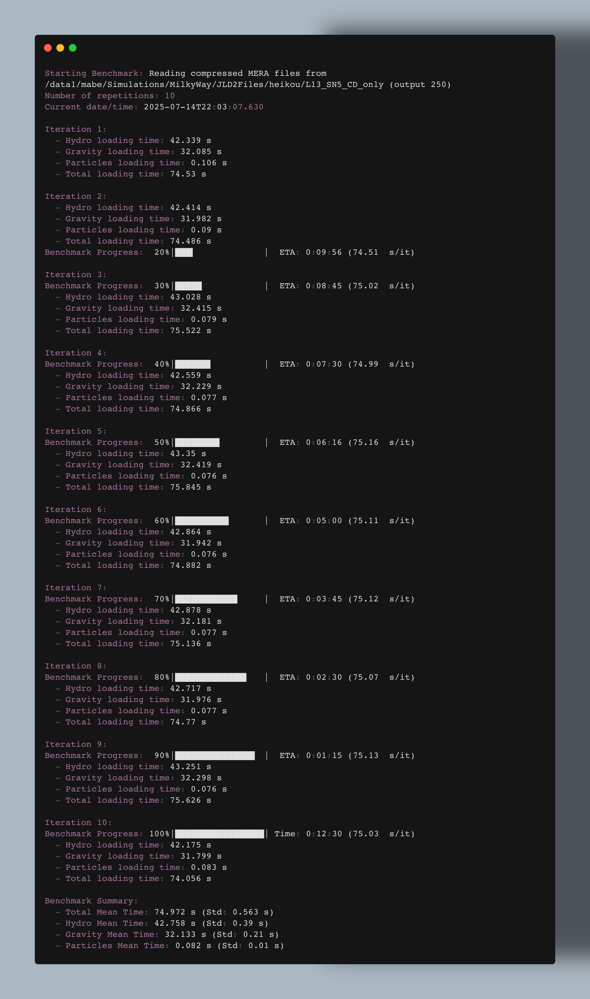
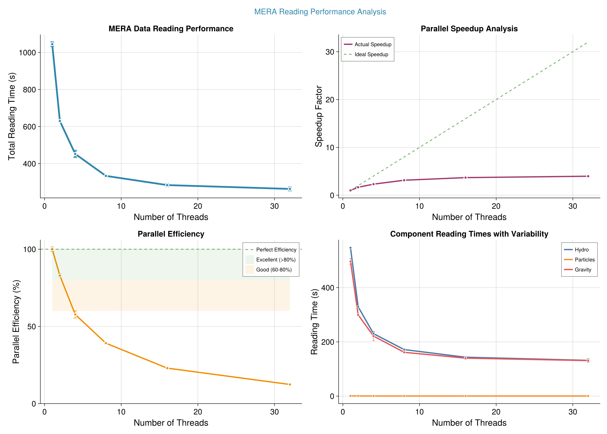

Benchmark: Single-Threaded Reading Performance of Compressed MERA Files
This guide shows how to benchmark the reading speed of compressed MERA files using Mera.jl, and explains when the MERA format is fastest.
Two effects, with different generality:
- Storage savings are universal. A compressed MERA file is several times smaller than the original RAMSES output (measured: ~78% smaller / ~4.5× on a typical output, see below), regardless of hardware.
- Read-speed gains depend on the storage backend. The MERA advantage scales with file-open latency × number of files. A RAMSES output is split into many files per component (one per CPU domain — often hundreds to thousands), so on servers with networked or parallel filesystems (Lustre/GPFS/NFS) or slow disks, opening all those small files dominates the cost and reading a single compressed MERA file is markedly faster — even versus multi-threaded RAMSES reading (see the Server IO and Parallel RAMSES reading benchmarks). On a fast local SSD/NVMe, per-file open latency is negligible, so RAMSES reading is already fast and MERA reading is comparable (the JLD2 decompression cost roughly offsets the fewer-files benefit). Benchmark on your target storage to know which regime you are in.
Overview
Mera.jl enables efficient reading of RAMSES simulation files, which are often compressed to reduce storage requirements. This test benchmarks the reading of hydro, particle, and gravity components from a specified output, measuring timings and reporting average speeds.
Prerequisites
Before running the test, ensure you have:
- Julia ≥ 1.10 (recommended)
- Mera.jl installed in your Julia environment
- MERA files: Access to compressed simulation outputs (e.g.,
output_00250.jld2) - Hardware: Sufficient memory and storage (decompression may require extra RAM)
Installation
Activate your Julia environment and install Mera.jl:
using Pkg
Pkg.activate(".")
Pkg.add("Mera")Benchmark script: run_test.jl
The benchmark script loads simulation metadata, reads each component (:hydro, :particles, :gravity) once, measures the time taken, and reports reading speed in MB/s.
Download it from the repository:
curl -L -O https://github.com/ManuelBehrendt/Mera.jl/raw/master/src/benchmarks/JLD2_reading/downloads/run_test.jl(or browse it here).
Edit the simulation path and output number near the top of run_test.jl, then run it single-threaded with your chosen Julia version:
julia +1.12 -t 1 run_test.jlSaving Output for Later Analysis
To save the screen output of your benchmark run for later review, pipe the output to a file in your benchmark folder. For example, on macOS or Linux:
If you use juliaup to manage Julia versions, you can specify the Julia version for the run. For example, to use Julia 1.10:
julia +1.11 -t 1 run_test.jl | tee benchmarks/benchmark_$(date +%Y-%m-%d).logThis will run the script with Julia 1.10 (or your chosen version), using a single thread, and store the output in a file named with today's date (e.g., benchmark_2025-07-26.log) inside the benchmarks folder. Adjust the folder name and Julia version as needed.
Key Script Components
- Metadata Loading: Uses
infodatato retrieve simulation details without verbose output. - Component Reading: Calls
loaddatafor:hydro,:particles, and:gravityin sequence, timing each operation. - Speed Calculation: Computes MB/s based on estimated file sizes.
- Output: Prints timings and speeds for each component, plus a total summary.
Running the Test & Example Output
Run the script as described above. The output will look similar to:

Performance Overview
The following chart shows detailed performance comparisons across different simulation components:

Measured results
Two complementary measurements are shown: a server / networked-storage case (where the MERA format's read-speed advantage is large) and a fast local SSD reproducible case (where storage savings remain large but read times converge). Always benchmark on your own target storage.
Storage reduction (universal)
Same simulation output stored in both formats (mw_L10, output 300, hydro + gravity + particles):
| Output | RAMSES (on disk) | MERA .jld2 | Reduction | Factor |
|---|---|---|---|---|
| output_00300 | 5.68 GB | 1.27 GB | ~78% | ~4.5× smaller |
Reduction = 100 × (1 − MERA/RAMSES). This holds independently of hardware and is the format's most robust benefit.
Read speed — server vs local SSD
On a server with networked/parallel storage, reading the many small RAMSES files is latency-bound, and a single compressed MERA file is read several times faster — even compared with multi-threaded RAMSES reading. See the measured server scaling in Server IO and Parallel RAMSES reading.
On a fast local SSD, the per-file latency penalty is small, so the formats are comparable. Reference run on Apple M2 Pro, 12 cores, 32 GB RAM, macOS 26.2, Julia 1.12.3; mw_L10 output 300 with ncpu = 640 → ~640 files/component; reading hydro + particles + gravity:
| Source / threads | Read time | Peak RSS |
|---|---|---|
MERA .jld2, 1 thread | 117 s | 6.05 GB |
| RAMSES, 1 thread | 108 s | 7.64 GB |
| RAMSES, 8 threads | 85 s | 6.31 GB |
Times are wall-clock for the full read with a warm-up call first (so first-call JIT compilation is excluded); Peak RSS is the process maximum resident set size from /usr/bin/time -l. These were obtained with an ad-hoc harness on the reference machine — the bundled run_test.jl in this guide currently reports wall-clock seconds only (no warm-up exclusion and no memory instrumentation). A single reproducible script that emits this full speed + memory table is planned; until then, treat the table as a reference measurement rather than a one-command reproducible artifact.
How to read this: on this local NVMe SSD the MERA file does not read faster than RAMSES — the format's read-speed win is specific to high-latency / many-file storage backends (servers). Compare equal resources (1 thread vs 1 thread: 117 s vs 108 s); the 8-thread RAMSES row is shown only to indicate multi-thread scaling, not as a like-for-like baseline. What does transfer to every machine is the ~78% storage reduction and a modest peak-memory benefit (MERA-file reading peaked ~20% below single-threaded RAMSES here, 6.05 vs 7.64 GB — plausibly because it avoids many intermediate per-file parse buffers, though this has not been allocation-profiled).
Summary for choosing the MERA format: always a large win for storage; a large read-speed win on servers / networked or slow storage with many files; roughly neutral for read speed on fast local SSDs. Reproduce the table above on your own target storage with the script in this guide.